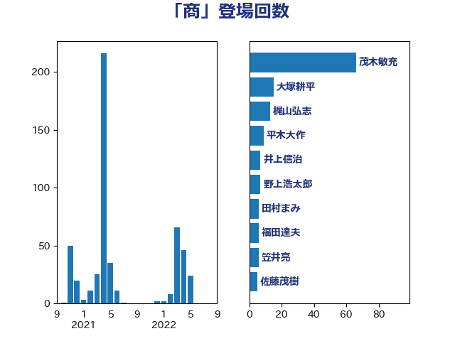

単語「商」

| 茂木敏充 | 自由民主党 | 66 回 |
| 大塚耕平 | 国民民主党 | 15 回 |
| 梶山弘志 | 自由民主党 | 13 回 |
| 平木大作 | 公明党 | 9 回 |
| 井上信治 | 自由民主党 | 7 回 |
| 野上浩太郎 | 自由民主党 | 7 回 |
| 田村まみ | 国民民主党 | 6 回 |
| 福田達夫 | 自由民主党 | 6 回 |
| 笠井亮 | 日本共産党 | 6 回 |
| 佐藤茂樹 | 公明党 | 5 回 |
| 石井苗子 | 日本維新の会 | 5 回 |
| 鈴木俊一 | 自由民主党 | 5 回 |
| 梅村みずほ | 日本維新の会 | 4 回 |
| 石井拓 | 自由民主党 | 4 回 |
| 若宮健嗣 | 自由民主党 | 4 回 |
| 足立康史 | 日本維新の会 | 4 回 |
| 進藤金日子 | 自由民主党 | 4 回 |
| 音喜多駿 | 日本維新の会 | 4 回 |
| 上川陽子 | 自由民主党 | 3 回 |
| 中根一幸 | 自由民主党 | 3 回 |
| 伊佐進一 | 公明党 | 3 回 |
| 林芳正 | 自由民主党 | 3 回 |
| 鈴木義弘 | 国民民主党 | 3 回 |
| あべ俊子 | 自由民主党 | 2 回 |
| 三浦信祐 | 公明党 | 2 回 |
| 中川宏昌 | 公明党 | 2 回 |
| 佐藤正久 | 自由民主党 | 2 回 |
| 古川禎久 | 自由民主党 | 2 回 |
| 宮崎政久 | 自由民主党 | 2 回 |
| 小熊慎司 | 立憲民主党 | 2 回 |
| 小西洋之 | 立憲民主党 | 2 回 |
| 山田美樹 | 自由民主党 | 2 回 |
| 岸真紀子 | 立憲民主党 | 2 回 |
| 川田龍平 | 立憲民主党 | 2 回 |
| 有村治子 | 自由民主党 | 2 回 |
| 柳ヶ瀬裕文 | 日本維新の会 | 2 回 |
| 江島潔 | 自由民主党 | 2 回 |
| 浅田均 | 日本維新の会 | 2 回 |
| 浅野哲 | 国民民主党 | 2 回 |
| 牧山ひろえ | 立憲民主党 | 2 回 |
| 美延映夫 | 日本維新の会 | 2 回 |
| 藤巻健太 | 日本維新の会 | 2 回 |
| 里見隆治 | 公明党 | 2 回 |
| 金村龍那 | 日本維新の会 | 2 回 |
| 長坂康正 | 自由民主党 | 2 回 |
| 長峯誠 | 自由民主党 | 2 回 |
| 下野六太 | 公明党 | 1 回 |
| 中村裕之 | 自由民主党 | 1 回 |
| 中野洋昌 | 公明党 | 1 回 |
| 中野英幸 | 自由民主党 | 1 回 |
| 串田誠一 | 日本維新の会 | 1 回 |
| 伊藤孝恵 | 国民民主党 | 1 回 |
| 伊藤達也 | 自由民主党 | 1 回 |
| 佐藤啓 | 自由民主党 | 1 回 |
| 加田裕之 | 自由民主党 | 1 回 |
| 古川元久 | 国民民主党 | 1 回 |
| 吉川赳 | 無所属 | 1 回 |
| 吉田統彦 | 立憲民主党 | 1 回 |
| 吉良よし子 | 日本共産党 | 1 回 |
| 坂本哲志 | 自由民主党 | 1 回 |
| 大家敏志 | 自由民主党 | 1 回 |
| 大島敦 | 立憲民主党 | 1 回 |
| 安達澄 | 無所属 | 1 回 |
| 宮崎雅夫 | 自由民主党 | 1 回 |
| 寺田学 | 立憲民主党 | 1 回 |
| 小山展弘 | 立憲民主党 | 1 回 |
| 小沼巧 | 立憲民主党 | 1 回 |
| 小野泰輔 | 日本維新の会 | 1 回 |
| 山岡達丸 | 立憲民主党 | 1 回 |
| 山田宏 | 自由民主党 | 1 回 |
| 岡本三成 | 公明党 | 1 回 |
| 岩渕友 | 日本共産党 | 1 回 |
| 平井卓也 | 自由民主党 | 1 回 |
| 末松信介 | 自由民主党 | 1 回 |
| 本村伸子 | 日本共産党 | 1 回 |
| 東国幹 | 自由民主党 | 1 回 |
| 柚木道義 | 立憲民主党 | 1 回 |
| 武部新 | 自由民主党 | 1 回 |
| 河野義博 | 公明党 | 1 回 |
| 浜田聡 | NHK党 | 1 回 |
| 渡辺創 | 立憲民主党 | 1 回 |
| 熊谷裕人 | 立憲民主党 | 1 回 |
| 牧原秀樹 | 自由民主党 | 1 回 |
| 玉木雄一郎 | 国民民主党 | 1 回 |
| 田島麻衣子 | 立憲民主党 | 1 回 |
| 田村智子 | 日本共産党 | 1 回 |
| 田畑裕明 | 自由民主党 | 1 回 |
| 盛山正仁 | 自由民主党 | 1 回 |
| 石原正敬 | 自由民主党 | 1 回 |
| 福島みずほ | 社会民主党 | 1 回 |
| 秋野公造 | 公明党 | 1 回 |
| 菅義偉 | 自由民主党 | 1 回 |
| 萩生田光一 | 自由民主党 | 1 回 |
| 薗浦健太郎 | 自由民主党 | 1 回 |
| 西村康稔 | 自由民主党 | 1 回 |
| 近藤和也 | 立憲民主党 | 1 回 |
| 金城泰邦 | 公明党 | 1 回 |
| 高野光二郎 | 自由民主党 | 1 回 |
| 鷲尾英一郎 | 自由民主党 | 1 回 |